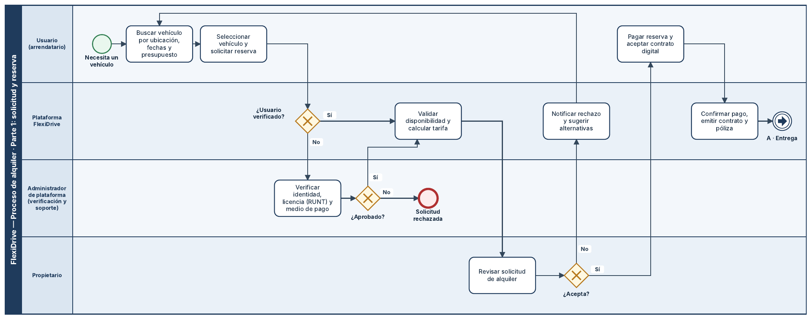
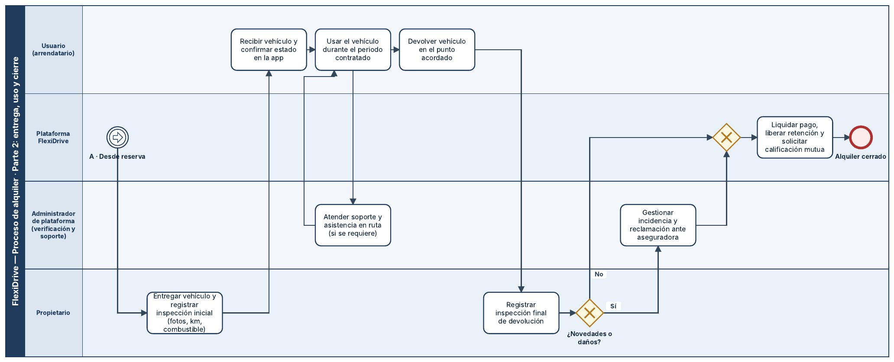
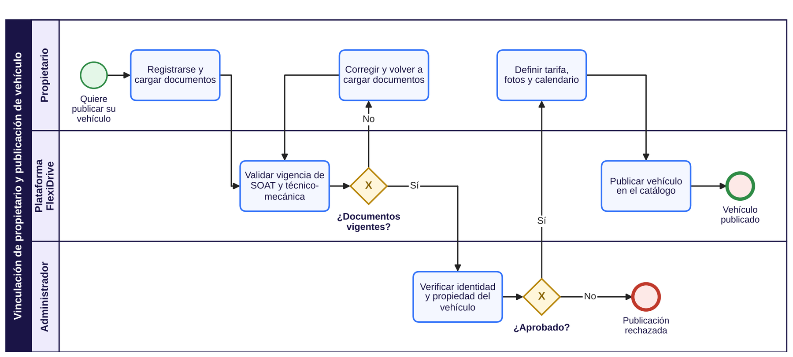
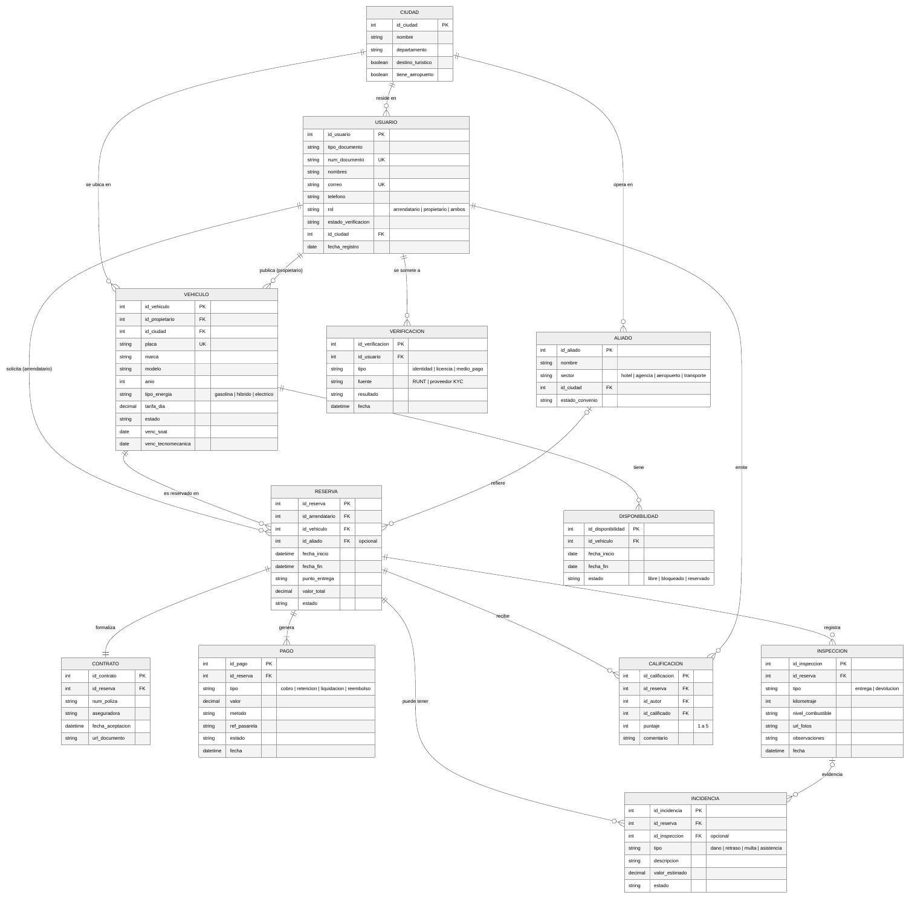
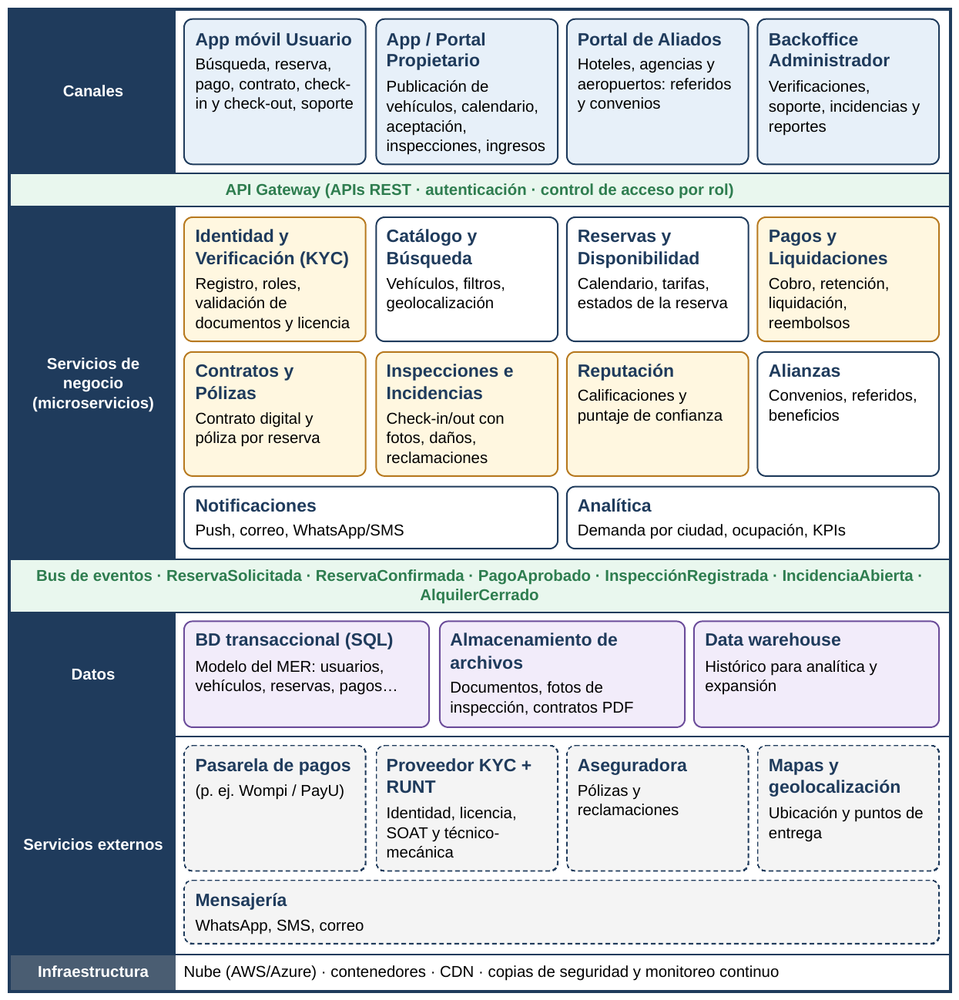
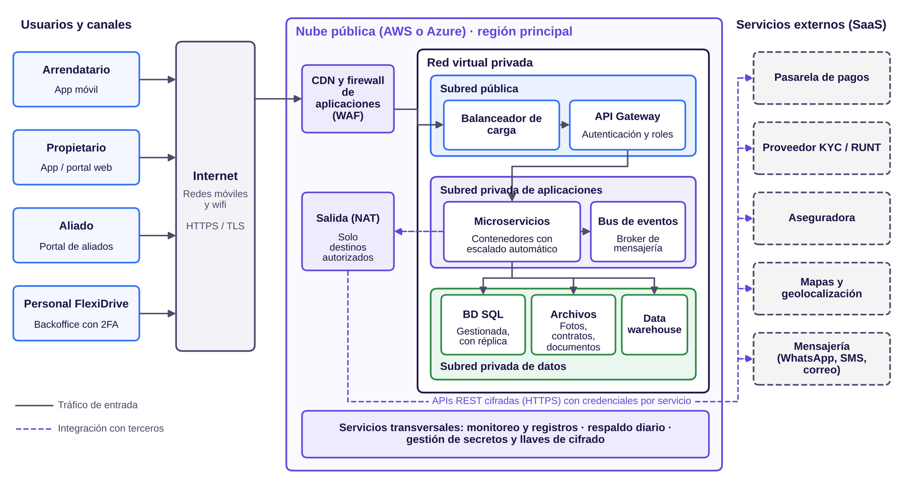

Sector
Movilidad y transporte: alquiler temporal de vehículos entre particulares. Inicia operaciones en Barranquilla.
FlexiDrive conecta a propietarios de vehículos disponibles con personas que necesitan transporte temporal, sin sedes físicas. Este portal muestra cómo está diseñada la empresa para lograrlo.
Movilidad y transporte: alquiler temporal de vehículos entre particulares. Inicia operaciones en Barranquilla.
El alquiler tradicional exige ir a sedes fijas, dejar depósitos y garantías, y no se adapta al tiempo de uso. Mientras tanto, hay vehículos quietos que podrían generar ingresos.
Una alternativa flexible, cercana y confiable, adaptada a la ubicación, el tiempo, el presupuesto y la necesidad de cada usuario.
Conectar a propietarios de vehículos disponibles con personas que necesitan una alternativa de transporte temporal, facilitando una experiencia de alquiler flexible, confiable y cercana.
Ser referente en movilidad inteligente y flexible en Colombia, con presencia en las principales ciudades y destinos turísticos, evolucionando hacia un ecosistema de movilidad, turismo y nuevas formas de transporte.
Elige un objetivo para resaltar las capacidades que lo hacen posible.
Elige una capacidad para ver por qué existe, quién responde por ella y qué aplicaciones la soportan.
Recorre el proceso paso a paso. Tú decides en cada compuerta y el tablero muestra qué rol actúa, qué regla se cumple, qué datos se usan y qué aplicación lo soporta.
Haz clic en un diagrama para ampliarlo.



Doce entidades con la Reserva como eje. Elige una entidad para ver qué representa, con qué se relaciona y qué servicio es su dueño.
Con atributos, llaves y cardinalidades. Haz clic para ampliarlo.

El usuario se registra una sola vez; el propietario publica su vehículo con documentos y fotos.
Identidad, licencia, medio de pago y vencimientos de SOAT y técnico-mecánica.
La reserva reutiliza los datos validados; propietario y aseguradora reciben lo necesario.
Cambian el estado de la reserva, la disponibilidad, los pagos, las inspecciones y la reputación.
Arquitectura por capas basada en microservicios e integrada por eventos. Elige un componente; los que tienen borde púrpura son los servicios críticos de confianza y seguridad.
Elige un evento para ver quién lo publica y quién reacciona.

Nube pública con pago por uso: FlexiDrive no compra servidores y crece cuando abre nuevas ciudades.
Haz clic para ampliarlo.

Compara el punto de partida con la arquitectura objetivo y recorre el roadmap.
Elige una fase para ver actividades, responsables e hitos.
El negocio manda. Capturar una vez. Un dato, un dueño. Seguridad desde el diseño. Integración por estándares. Nube primero.
Gerencia, Líder de TI, Confianza y Seguridad, Operaciones y Finanzas. Aprueba el roadmap, prioriza y revisa el cumplimiento.
Matriz de Zachman para clasificar, TOGAF ADM para ordenar el trabajo y ArchiMate 3.1 para modelar.
Elige un objetivo estratégico y recorre la cadena completa. Así se comprueba que la arquitectura está alineada: nada existe sin un objetivo que lo justifique.
Herramienta: asistente de IA generativa Claude (Anthropic).
Propósito: apoyo en la organización de ideas, la redacción, la verificación del modelo ArchiMate y el desarrollo de este portal.
Contribución del equipo: creación de la empresa y su estrategia, Matriz de Zachman, diseño del proceso (BPMN), del modelo de datos (MER) y de la arquitectura de aplicaciones; decisiones de arquitectura, revisión y validación de todo el contenido.